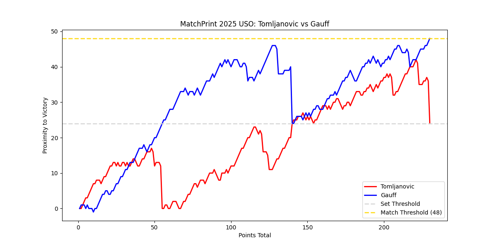
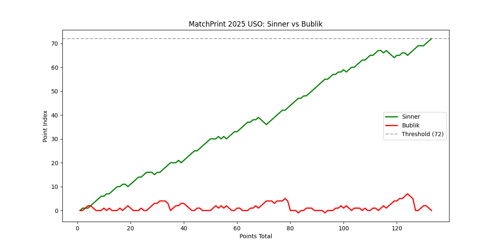
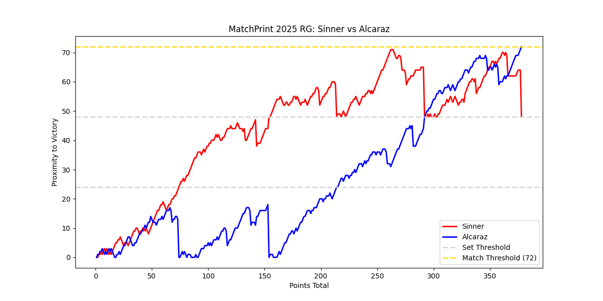

Introducing: Matchprint
Racqueteering
1931 | 0
Tennis prides itself for its histrionics. At the biggest tournaments of the sport, on its biggest courts, you will see grandiloquent quotes prominently and permanently displayed — plastered on the stadium walls, “Victory belongs to the most tenacious”, Court Philippe Chatrier; in the threshold where the tunnel meets the court, “Pressure is a privilege", Arthur Ashe Stadium; or in the decadent clubhouse before walking beneath royalty, “If you can meet with Triumph and Disaster and treat those two impostors just the same”, Center Court. These quotes are taken from legends of the sport, legends of war, and legendary poems. They are placed such that players must come to grips with them, and must reflect on them in one way or another. So what allows for these statements to avoid feeling absurd? How does the sport itself ever live up to the urgency and fatality? It all starts with a scoring system with no well-defined end and a clock that only ticks up.
In tennis, the win condition is very clear. Win two of three (or sometimes three of five) sets. But to win just one set you must first win at least six games. And to win a game you must win at least four points. How you win a point is generally left up to you.
It’s in the ‘at least’ where the drama is derived. Because, in tennis, all you need to do to win a match is win 48 (or sometimes 72) points — how easy! But of course it is never so straightforward. Every point you win in a game you do not win is essentially futile. In tennis, from first ball to last, you are climbing a mountain of progress that by definition only has room for one at the summit.
Although the winner always reaches the same golden threshold, the path of each player in a match is unique. It is my thesis that you can tell the story of a match through the escalations and collapses of a player’s minimum ‘distance’ to victory. It is a fingerprint, of sorts, that uniquely describes a given contest. From first point to last, it records the minimum number of points needed to win a match for each player. To test my theory, you will see a few examples from matches with varying degrees of spectacle and occasion.
Coco Gauff d. Aylja Tomljanovic 6-4 6-7(2) 7-5 US Open 2025

Coco Gauff is an icon. She is a global superstar, one of the best athletes in her sport, a champion of the most prestigious tournaments in the world. Yet, if you follow the sport of tennis at all, you probably have one thought that accompanies you during her matches — Oh, God, how is she winning this match…of course she’s winning this match! Coco has made something of an art out of Winning Ugly — her former coach literally wrote the book on it! — with an emphasis on Winning. She has made it to world ranking number 2 and won 2 grand slam tournaments all at the age of 21! She beat Venus Williams when she was 15 years old! And she has had all of this success with a serve that, at its worst, will make you want to look away and a forehand that is routinely picked apart by the very best. What makes her special is her spirit and resolve, though plenty of tenacious players have come and gone without any of her success. She has genuine, obvious, maybe even generational talent and she has done everything possible to capitalize on her potential.
Watching her matches this year has often been a draining emotional experience and this was highlighted at this year's US Open when, days before the start of the tournament, she fired some of her coaching team and brought in a Serving Expert to attempt to solve her yips. What followed was some of the most gutsy, emotional, appalling tennis you will ever see. Tens of thousands of people watched live as a young superstar deconstructed the most crucial part of her game in the most vulnerable position imaginable. There were double faults, there were errors, and there were tears, oh were there tears. But there were also wins. Remarkably and damn near inexplicably there were wins. And no, it was not pretty, but it was Coco. It was an athlete at the top of the world who knew deep down that something needed to change — that she could be better.
A limitation of a static graphic like this one is that it cannot contain the atmosphere of a match. You can’t tell how it felt to watch Coco fight through every demon towards a meandering victory, but you can see each turn the match took. For those that watch this match, and any other given match, a Matchprint can at least serve as evidence of the draining thrawl of the experience. Coco would go on to win 2 more nervy, upsetting matches before falling to the just-as-almighty Naomi Osaka in the 4th Round. Her struggles largely remain, but so does her intangible ability to win matches. For the sake of my heart, I look forward to the day I don’t have to clench my breath after a first serve goes awry, and for the sake of the WTA, I hope they are prepared for the day she figures it out.
Jannik Sinner d. Alexander Bublik 6-1 6-1 6-1 US Open 2025

Not every match can be breathtaking. Some matches — some players — are simply too clinical for drama to awaken. By Sascha Bublik’s own words, Jannik Sinner is one of those players. Sinner is one of two (we’ll get to him) players of his generation who has risen clear above the crowd of contemporaries. And he has done so in an understated but ruthless style. He is not dripping with charisma — he is a slender Italian with the quiet demeanor of someone who grew up in the peace of snow-capped mountains — but his tennis is otherworldly. He steadily rose to prominence when all eyes were on another phenomic champion (remain patient, please) and gained the status of World number 1 through a relentless 2024 season. Then, of course, came controversy. And he was allowed to silently serve out a 3 month ban at the beginning of the 2025 season.
For most people, a distraction of this magnitude would have heavy repercussions of their results, but Sinner has always liked to let his tennis do the talking. He came back and immediately continued his habit of only ever losing to one guy (What did I say?) and beating the rest. He’d go on to win 2 of the 4 grand slam tournaments, and many, many results like the one above.
This match is meant to encapsulate the nihilistic futility tennis can impose on its contestants when things just aren’t going your way. By necessity of the scoring system, a beatdown is obvious and embarrassing. By the end of this match, Bublik was no closer to winning than he was at the very start. Hours of work, dozens of points and nothing to show for it. Three measly games that add up to Zero. Bublik has a good spirit about these things — he is one of the more unserious but still fun players on the tour — and he even gave Sinner a good battle at an earlier tournament. But he will never have what Sinner has. In a sport in which consistency is perhaps the shining attribute, Sinner is the most consistent. He will stay with you, he will pummel you, and he will slyly walk to his towel box before repeating his tactics. If only he had an equal…
Carlos Alcaraz d. Jannik Sinner (i don’t even know the score man) Roland Garros 2025

Welcome to the match that gave me this idea. I had long been a fan of Carlos Alcaraz, and an admirer of Jannik Sinner prior to this match. I thought I knew what I was getting with these two. But the first thought I had after this match was: I need help understanding what just happened. For the uninitiated, let me try to explain. Carlos Alcaraz burst violently onto the scene at a time of dying stars; Nadal was ailing, Federer was old…and ailing, and Djokovic was mostly doing okay. When so many of the next-to-be seemed to be patiently waiting their turn, Alcaraz went out and took it — he won his first grand slam at the age of 18 and has proceeded to win at least one every year since. He was winning in a way that felt different; a combination of all of the greats with the flair of a kid who very much grew up online and enjoyed dazzling the crowd.
And then there was Sinner, a year older and yet a year later in his breakout than Alcaraz. His was a steady climb — doing it the-right-way until he became nearly unstoppable. And I say nearly because of Alcaraz. In 2024, when Sinner was thrashing everyone, he was losing to Alcaraz. By the time of this match, Alcaraz had turned the head-to-head matchup from an even affair to a runaway in his own favor. And yet, the two had never met on the biggest stage — the final of a grand slam tournament. And finally, a few weeks removed from Sinner’s return and one year removed from Alcaraz’s previous victory on the same court over Sascha Zverev, the two prepared for a meeting.
Expectations were sky-high and they were absolutely demolished. And yet, how close we were to this match being a straightforward win for Sinner. Indeed, it looked like he was going to run away with it. No amount of Alcaraz magic was going to be enough to trouble the machine of Jannik Sinner, until there was. Carlos Alcaraz saved three match points in the fourth set, and then a few more hours of crazy proceeded. And you can see this moment clearly; Sinner was one point away from victory three times in a row, until he was two points away, then three… then more, until suddenly we are in a fifth set and you can throw every point played up to now out of the window because each player is the same 24 points from victory. That is the floor. And in the end Alcaraz won, tennis won, Paris won, and only Sinner lost — but only by the strictest definition.
It wasn’t just that this match was long and full of storybook twists. It was a clash of everything I love about the sport — varying styles of play and personality, tense moments stretched out to infinity, relentless effort, and in the end a mutual appreciation for the drama of Sport from the only two actors on a lonely stage. It should be clear that Matchprints are no substitute to watching the event — please, please go watch the tennis — but at least for me, they serve as a memento to a time and place that can not be replayed, not really. You can rewatch the highlights, and I have, but you will not relive a match as it was. Matchprints, at the very least, show you the kinetic energy of each match. They show you why the best players must fight for each point like it’s their last and why it’s worth crying for when you fall short. At the end of it all, it’s just tennis, but it doesn’t have to be.